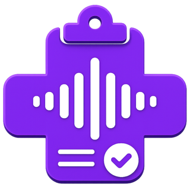

ProntoVoz Anestesiologista
Ficha anestésica por voz, foto ou digitação, com Modo Sala e PDF. Ver na App Store · Informações do app

ProntoVozSuporte · ProntoVoz Anestesiologista e ProntoVoz Cirurgia
Aqui estão o canal de contato e as respostas mais comuns sobre acesso, conta, assinatura, PDF e assinatura digital dos apps ProntoVoz para iPhone e iPad.
webcamargo@grupopasdiora.com.br
Escreva a qualquer momento; respondemos pelo mesmo e-mail. Para agilizar, informe:
Ao enviar capturas, oculte nomes e dados de pacientes. Nunca envie sua senha, códigos de verificação ou a senha do certificado digital: o suporte não pede essas informações.
Ficha anestésica por voz, foto ou digitação, com Modo Sala e PDF. Ver na App Store · Informações do app
Relatório do ato cirúrgico ditado, revisado campo a campo e exportado em PDF. Ver na App Store · Informações do app
O acesso é feito com o e-mail e a senha cadastrados no app. Ainda não há recuperação automática de senha: se você esqueceu a sua, escreva para o suporte a partir do e-mail cadastrado e a redefinição é feita manualmente, depois da confirmação da sua identidade.
Pessoas elegíveis que nunca assinaram podem ativar 14 dias de teste sem cadastrar cartão. O teste é vinculado à conta (reinstalar o app não reinicia o prazo) e não gera cobrança automática: ao terminar, você decide se contrata a assinatura pela App Store. Durante o teste, conecte-se à internet ao reabrir o app para confirmar o acesso.
A assinatura é mensal e individual, contratada e cobrada pela App Store, que mostra o preço e as condições antes de você confirmar. Depois de contratada, ela se renova automaticamente até o cancelamento. Para gerenciar ou cancelar: Ajustes do iPhone → sua Conta Apple → Assinaturas. Para liberar o acesso em um aparelho novo, use Restaurar compra na tela de plano do app. Pedidos de reembolso de compras feitas na App Store são analisados pela Apple em reportaproblem.apple.com.
No app, abra Início → Ajustes: lá estão Sair da conta e Excluir minha conta. A exclusão pede confirmação com a sua senha e avisa o que acontece com os documentos. Excluir a conta não cancela a assinatura na Apple: cancele a renovação em Assinaturas da Conta Apple. Documentos assinados seguem as regras de guarda descritas na política de privacidade.
Registrar por voz, revisar e preencher funciona sem internet, e o reconhecimento de voz roda no próprio aparelho. A prévia do PDF e a assinatura digital podem exigir conexão.
Nada entra no documento sem a sua conferência: os campos preenchidos por voz ou foto ficam marcados para revisar até você aprovar, e o que não foi dito fica em branco. Face ID e Touch ID confirmam que a revisão foi feita; a responsabilidade pelo conteúdo clínico continua com o médico.
A assinatura com validade ICP-Brasil usa um certificado e-CPF em nuvem de provedor compatível, conectado no app; o CPF do certificado precisa ser o mesmo do cadastro. O ProntoVoz não emite certificados. Se aparecer um erro, informe ao suporte apenas o nome do provedor e a mensagem exibida, sem credenciais. Sem certificado, o PDF pode ser preparado para assinatura manual no papel.
A leitura de fotos depende da qualidade da imagem: uma foto difícil ou uma etiqueta rasurada pode exigir preenchimento manual. As fotos são lidas no aparelho e apagadas depois da leitura.
A política de privacidade dos apps descreve quais dados são tratados, por quanto tempo e como exercer os seus direitos previstos na LGPD. Pedidos sobre os seus dados pessoais também são atendidos pelo e-mail de suporte.
Nas mensagens ao suporte, não inclua dados de pacientes.